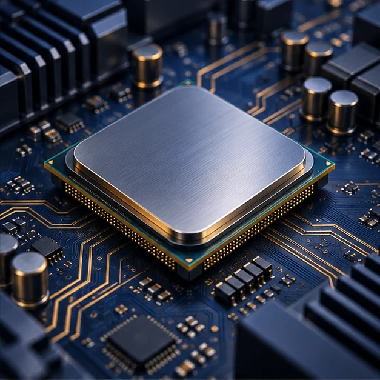

Componentes
El núcleo de tu equipo.
Explorar subcategorías
- Procesadores
- Memorias
- Almacenamiento

Para estudiar, trabajar, crear o jugar. Armamos tu PC y te ayudamos a elegir el hardware según tu uso y tu presupuesto.


El núcleo de tu equipo.

Lo que ves, tocás y escuchás.

Conexiones para tu espacio de trabajo.
Imágenes ilustrativas de hardware.
Contanos para qué vas a usar la compu. Elegimos los componentes con vos y armamos el equipo en función de tus prioridades.
Consultar por un armadoSi tenés dudas entre dos opciones o querés actualizar tu PC, te ayudamos a decidir dónde conviene invertir.
Necesito asesoramientoSomos Star Pulse, un equipo de San Francisco, Córdoba, especializado en la venta de hardware y el armado de PCs a medida. Ponemos el conocimiento técnico al servicio de una decisión personal: qué equipo te conviene para lo que querés hacer.
San Francisco, Córdoba
Lunes a viernes de 9 a 18 h